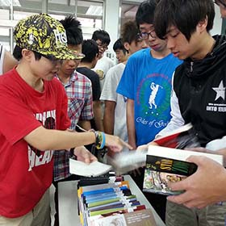
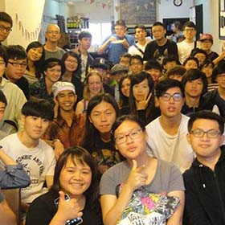
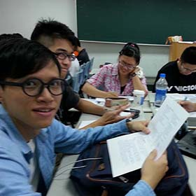
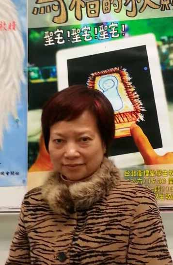

<html lang="en"></html><head><meta charset="UTF-8"/><title>EEweb</title><link rel="stylesheet" type="text/css" href="./semantic-ui/semantic.css"/><link rel="stylesheet" type="text/css" href="./asset/stylesheets/reset.css"/></head><body><div id="navbar" class="ui stackable menu container"><a href="./home.html" class="active item">EEWEB</a><a href="./home.html" class="item"><i class="home icon"></i>HOME</a><a href="./intro.html" class="item"><i class="empty star icon"></i>INTRO</a><a href="./library.html" class="item"><i class="book icon"></i>LIBRARY</a><a href="./record.html" class="item"><i class="history icon"></i>RECORDS</a></div><div class="ui container"><div class="ui three column grid item stackable"><div class="column"><h5 class="ui center aligned icon header"><br/><br/><br/><div class="description"></div>豐富的閱讀內容與語言歷練<br/>上百本學習型的英文小說給予學生選擇<br/>學生豐富的學習機會與閱讀紀錄、豐碩的學習果<br/><br/><button class="ui red button">豐富的閱讀列表</button></h5></div><div class="column"><h5 class="ui center aligned icon header"><br/><br/><br/><div class="description"></div>有趣的校外活動與實際練習<br/>與外國人進行真正的面對面活動<br/>透過參與活動引發學生學習英文的興趣<br/><br/><button class="ui orange button">淡水英文洗禮行</button></h5></div><div class="column"><h5 class="ui center aligned icon header"><br/><br/><br/><div class="description"></div>令人訝異又滿意的學習成果<br/>經過一學期學生與老師的共同努力與奮鬥<br/>每個小組都繳交出亮眼的學習成果與厚實的紀錄<br/><br/><button class="ui blue button">學期學習成果展示</button></h5></div></div><br/><br/><br/><div class="ui container"><div class="ui container"><div class="ui segment"><a class="ui red right ribbon label">經歷 Experience</a><p> </p><a class="ui green right ribbon label">美國德州奧斯汀大學 英語所 碩士</a><p></p><a class="ui olive right ribbon label">亞東技術學院通識教育中心講師</a><p></p><a class="ui yellow right ribbon label">專長 Specialty</a><p></p><a class="ui blue right ribbon label">英語學習策略</a><p></p><div style="margin-top:-200px" class="ui three column grid"><div class="column"><div style="width:300px; margin: 22px" class="ui fluid image"><a href="https://www.facebook.com/profile.php?id=1553449049&amp;fref=ts" target="_blank" class="ui left corner label"><i class="facebook icon"></i></a></div></div><div class="column"><h1>Laura 羅玉冰</h1><div class="ui divider"></div><p class="ui small header"><a class="ui red tag label">學歷簡介</a><br/><br/>美國德州奧斯汀大學 英語教學碩士<br/>國立政治大學西洋語文學系學士<br/>台北市立第一女子高級中學畢業</p><div class="ui divider"></div><p class="ui small header"><a class="ui orange tag label">教學經歷</a><br/><br/>亞東技術學院專任英文講師<br/>台灣科技大學兼任英文講師</p><div class="ui divider"></div><p class="ui small header"><a class="ui green tag label">獲獎紀錄</a><br/><br/>104學年度教育部補助技專推動通識課革新計劃<br/>103學年度教學單位教學優良獎<br/>101學年度優良教材、教具教學評選-教材編撰(大二英文)佳作<br/>98學年度 教學優良獎</p><div class="ui divider"></div><p class="ui small header"><a class="ui blue tag label">教學專長</a><br/><br/>廣泛閱讀教學<br/>英語文學習單教學</p><div class="ui divider"></div></div></div></div></div></div><br/><br/><br/></div><style>a.footer.footer{
	float: left;
	margin-right: 20px;
	color: black;
}
h4.ui.header.top{
	border-bottom: 1px solid #d7d7d7;
}</style><div class="ui vertical footer segment"><div class="ui container"><div class="ui grid"><div class="three wide column"><h4 class="ui header top">Teacher Info</h4><h4 class="ui header"><a href="#" class="footer item"><i class="mail icon"></i><div class="content"><div class="header">Mail</div></div></a><a href="https://www.facebook.com/people/%E6%B4%AA%E4%BA%8E%E8%91%89/100003976970131" class="footer item"><i class="Facebook icon"></i><div class="content"><div class="header">Facebook</div></div></a></h4></div><div class="six wide column"><h4 class="ui header top">Link</h4><h4 class="ui header"><a href="http://www.oit.edu.tw/bin/home.php" class="footer item"><i class="Student icon"></i><div class="content"><div class="header">亞東技術學院</div><div class="description">通識教育中心</div></div></a><a href="http://gecw.oit.edu.tw/bin/home.php" class="footer item"><i class="Student icon"></i><div class="content"><div class="header">Oriental Institute of Technology</div><div class="description">Center for General Education</div></div></a></h4></div><div class="seven wide column"><h4 class="ui header top">School Info</h4><h4 class="ui header"><a class="footer item"><i class="Marker icon"></i><div class="content"><div class="header">Address</div><div class="description">新北市板橋區四川路二段58號</div></div></a><a class="footer item"><i class="Phone icon"></i><div class="content"><div class="header">Tel</div><div class="description">7738-8000 or 7738-0145</div></div></a></h4></div></div></div><br/></div><script src="https://code.jquery.com/jquery-2.1.4.min.js"></script><script src="./semantic-ui/semantic.js"></script><script src="http://cdnjs.cloudflare.com/ajax/libs/jquery.form/3.51/jquery.form.min.js"></script></body>